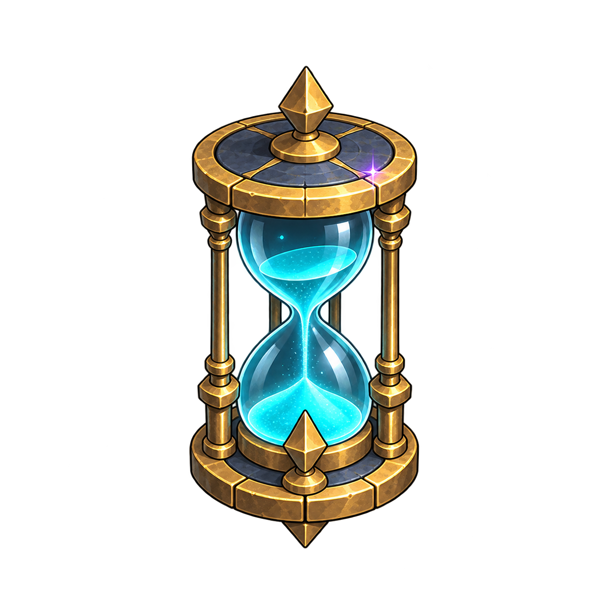

A LITTLE ADVENTURE THROUGH TIME
REWIND
TOWER
되감는 시계탑
모든 것이 멈춘 시계탑.
당신의 한 걸음이 시간을 다시 움직입니다.
EXPLORER'S JOURNAL01 / 10

시계탑에 오신 것을 환영합니다
기록을 열고, 멈춘 시간 속으로 들어가세요.
◇ 이 브라우저에만 보관되는 작은 기록게임용 닉네임과 PIN을 사용하세요. 온라인 계정이 아니며, 브라우저 데이터를 지우면 기록도 사라집니다.
YOUR TIME IS WAITING
REWIND
TOWER
되감는 시계탑
돌아갈 수 있는 건, 당신의 위치뿐.
이미 바꾼 세상은 그대로 남습니다.
TEN FLOORS. ONE LOST MOMENT.
시계탑을 오르는 여정
한 층씩 시간을 깨우고, 당신의 최고 기록을 남겨보세요.
현재 점수1,000
시간 톱니0 / 3
되감기0
이동0
자동 저장 준비